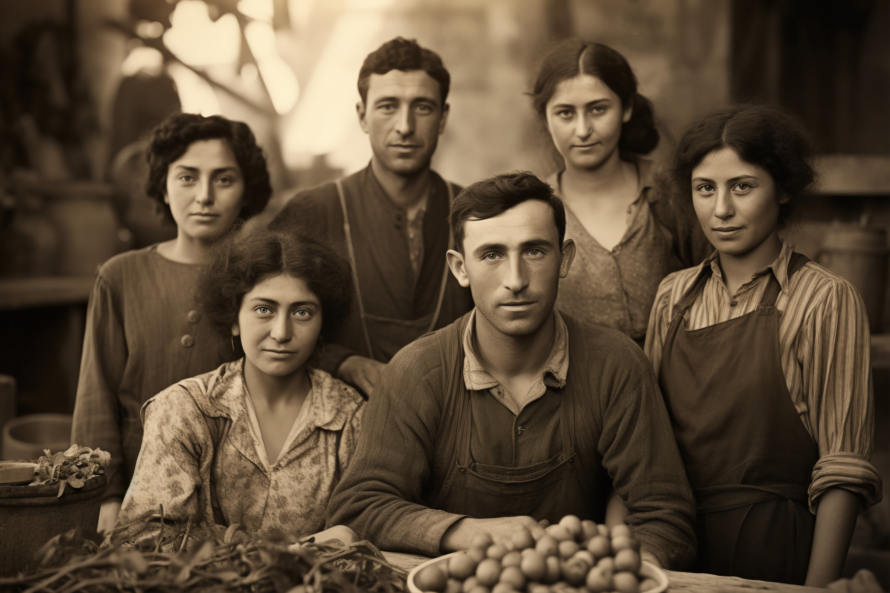

A Pitico Pet é uma das maiores e mais renomadas pet shops
especializadas em produtos para animais de estimação em todo o Brasil.
Fundada em 1990, a empresa tem crescido constantemente,
conquistando uma clientela fiel e ampliando sua presença para além das
fronteiras nacionais, com uma abrangência que alcança atualmente
diversos países da América Latina.
Localizada em São Paulo, nossa sede central é um verdadeiro hub de
distribuição, de onde partem diariamente centenas de entregas para lares
de todo o país. Nosso compromisso com a qualidade e o bem-estar dos
animais é refletido em cada produto que oferecemos, garantindo a
satisfação e confiança dos nossos clientes.
Centro de distribuição da Piticos Pet
Compre as roupas e acessórios para o seu bichinho de estimação na
Piticos Pet. Acesse nossa loja ou entre em contato se tiver dúvidas.
Conheça nossa História e nossos Diferenciais
A história da Pitico Pet teve início há mais de três décadas, quando a
família Nascimento, apaixonada por animais, decidiu transformar sua
paixão em negócio. Com determinação e visão empreendedora, o
fundador, Nelson Nascimento, liderou a expansão da empresa desde os
primeiros dias. O nome "Pitico" é uma homenagem ao primeiro mascote
da família, um pequeno cãozinho de estimação que inspirou a jornada
empreendedora.

Família Nascimento
O crescimento da Pitico Pet foi notável desde sua fundação. Em apenas
dois anos, já atendíamos clientes em 10 estados brasileiros. Em uma
década, expandimos nossas operações para outros países da América do
Sul, consolidando nossa presença internacional. Hoje, a Pitico Pet tem o
privilégio de servir milhões de clientes em mais de 15 países, oferecendo
uma variedade de produtos que vai desde rações especiais até acessórios
de luxo para animais de estimação.
O número de colaboradores cresceu junto com nossa expansão.
Atualmente, somos uma das maiores empregadoras do setor pet no Brasil,
contando com uma equipe dedicada de mais de 5 mil profissionais. Além
disso, mantemos parcerias com milhares de fornecedores locais e
internacionais, contribuindo para a economia e desenvolvimento da
indústria pet em nosso país.
A Pitico Pet tem sido reconhecida não apenas pelo seu sucesso
comercial, mas também pelo compromisso com causas sociais e
ambientais. Recebemos prêmios de reconhecimento por nossas iniciativas
sustentáveis e investimentos em programas de bem-estar animal. Nossa
loja já recebeu visitas de personalidades influentes, incluindo membros do
governo e celebridades que compartilham nossa paixão pelo universo pet.
Estamos comprometidos em continuar a oferecer os melhores produtos e
serviços para os nossos queridos amigos de quatro patas, mantendo
sempre o respeito e amor pelos animais no centro de nossas operações.
Diferenciais
Menor preço do varejo, garantido.
Se você achar uma loja mais barata, leva o produto de
graça.
Todo mês temos descontos.
Além de produtos para seu pet, contamos com banho e tosa.
Grande diversidade nas mercadorias.
Várias raças de pets a venda ou adoção, possibilitando que
você tenha um novo amigo.
Contamos com médicos veterinários e uma seção de remédios caso
seu amigo esteja doente.